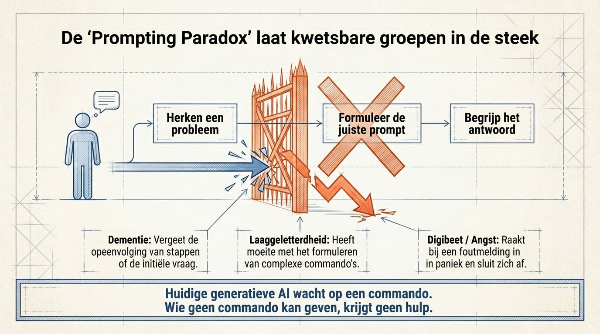

Demasiados pasos
Una tarea simple puede volverse un laberinto cuando cada pantalla pide otra decisión.
Qué es
Ouroboros es un guardián digital privado. Ayuda cuando un teléfono, ordenador o aplicación empieza a confundir, asustar o bloquear a alguien.

Por qué importa
La vida real no funciona así. Las personas se cansan, se preocupan, olvidan o temen tocar donde no deben. La buena ayuda no debe hacer sentir mal a nadie.
Una tarea simple puede volverse un laberinto cuando cada pantalla pide otra decisión.
La gente deja de intentarlo cuando un clic incorrecto parece peligroso.
Muchas personas no piden ayuda porque creen que ya deberían entender.


El mejor camino
Ouroboros detecta momentos de estrés, explica lo que pasa y ayuda solo lo necesario. El objetivo es dignidad, no dependencia.
Qué es
La página de inicio cuenta toda la historia con palabras simples.